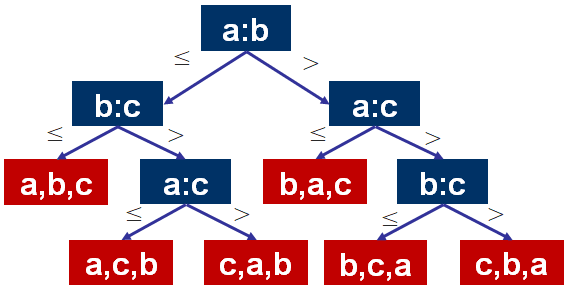
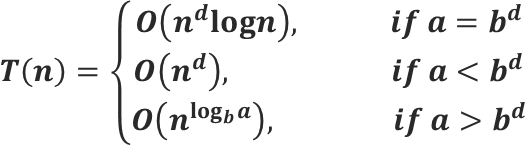

基本概念
正如其名，分治可以理解为“分而治之”。基本思想就是将原问题分解为规模较小的性质相同的互不重叠的子问题，最后将子问题的解组合成原问题的解。由于所有拆分出来的子问题都是相同性质的，因此可以方便地用递归方式来实现。
注：这里的互不重叠是指同一个层次（也就是后面决策树中的层次）的问题直接分解出来的子问题性质是相同的，不同层次问题分解出来的子问题不相同。
归并排序
作为分治的经典例子，在这里我们用来初步了解分治。
问题分析
问题描述： 输入 —— n个无序数组成的数组（假定n为2的幂） 输出 —— 按升序排序
如何分治：
1、分解： 当数组长度大于1时，将数组等分为两个子数组。
2、求解： 递归地将两个子数组分别排序。
3、合并： 将两个已排序的子数组进行合并。
归并排序问题分解
如何合并：
// C=输出数组，长度为m
// A=第一个已排序数组，长度为m/2
// B=第二个已排序数组，长度为m/2
i=1; j=1;
FOR k=1 to m
IF A[i] < B[j]
C[k] = A[i]; i++;
ELSE
C[k] = B[j]; j++;
ENDFOR算法运行过程中，m的规模从2逐渐增大到n，也就是不断解决子问题，最终组合成原问题的结。
复杂度分析
你应该发现了，对于这个题目，一个问题不断分解为两个子问题的过程是一个递归的过程，很像二叉树形成的过程，由此我们可以用一棵二叉树来分析算法的复杂度。下图为分析该问题的二叉树。
归并排序的递归树
每一个结点可以看成一个子问题，子问题是让该结点对应的数组变得有序。
根据树以及分治的特性，下面对该二叉树做出分析 （本质可以看作Navie分析）
- 树的总层数为log2n+1
- 第i层有2i个子问题
- 第i层子问题规模为n/2i（因为这里分解时将问题分解为两个相同的子问题，每次分解都使规模下降一半）
- 第i层子问题的复杂度 2i × n/2i = n
综上所述，时间复杂度 O(n*(log2n+1)) = O(n*logn)
另一种分析方法
T(n) = 2*T(n/2) + n
= 2*(2*T(n/4) + n/2) + n = 4*T(n/4) + 2*n
= 4(2*T(n/8) + n/4) + 2*n = 8*T(n/8) + 3*n
= ...
= 2^k*T(n/2^k) + k*n递归到最后，T(n/2^k)≈T(1)，也就是 n/2^k = 1，计算归并排序的时间复杂度，就演变成了计算 k 的值，2^k = n，所以 k=log2 n，我们把 k 的值带入上述 T(n) 的推导公式，得到：
T(n) = n*T(1) + n*log2n = n(C + log2n)把常量和低阶忽略，所以 T(n) = nlogn。
推广
任何基于比较的排序算法，RT都不可能低于𝑶(𝒏𝐥𝐨𝐠𝒏)。
任何基于两两比较的排序算法都可以表达为下图的一棵决策树。
树上节点：比较操作 叶子节点：比较结果
排序算法的决策树
任何正确的排序算法都应该检查到所有可能的排序，对于上图基于比较的决策树，一次排序所需要的比较次数等于路径长度。所有排列的结果都在叶子结点出现，叶子结点数l≥n!，又对于满二叉树l≤2h，解得h≥𝐥𝐨𝐠(𝒏!)=𝛀(𝒏𝐥𝐨𝐠𝒏)。又一次排序的长度上界为h，原结论得证！
算法分析
定理
（1）𝑻(𝒏)=𝒂𝑻(𝒏/𝒃)+𝑶(𝒏d ), 其中𝒂≥𝟏为递归调用的次数；𝒃>𝟏为子问题规模的缩减因子; 𝒅≥𝟎为合并步骤的RT的指数因子。
（2）当n足够小时，𝑻(𝒏)=𝑶(𝟏)【几乎总是满足的。】
则有： 
对归并排序 𝒂=𝟐, 𝒃=𝟐, 𝒅=𝟏 => 𝑶(𝒏𝐥𝐨𝐠𝒏) 可以看到分析正确。
证明
令𝑻(𝟏)=𝟏，并且𝑻(𝒏)≤𝒂𝑻(𝒏/𝒃)+𝒄𝒏d。【BigO的定义】
假设n是b的幂。
这里的分析思路可以看作归并排序递归树分析的拓展。只是此处不再一定是二叉树了而是a叉树。
分治的递归树
同理根据树以及分治的特性，下面对该a叉树做出分析
- 树的总层数为logan+1
- 第i层有ai个子问题
- 第i层子问题规模为n/bi（因为这里分解时将问题分解为a个子问题，每次分解都使规模变为原来的1/b）
- 第i层子问题的RT ai × n/bi × cnd = 𝒄𝒏d (𝒂/𝒃d ) i
分析结果： 
a是子问题数目的增长速率。 𝒃d是每个子问题RT的缩减速率。
𝒂=𝒃d意味着每层的RT是一样的。
𝒂<𝒃d意味着RT逐层减少。 => 根节点的RT占主导。
𝒂>𝒃d意味着RT逐层增加。=> 叶节点的RT占主导。
根据数学定理
下面一样分情况对时间复杂度进行分析
𝒂=𝒃d 时 𝑻(𝒏)≤𝒄𝒏𝒅 (𝐥𝐨𝐠𝒃𝒏+𝟏) => 𝑻(𝒏)=𝑶(𝒏𝒅 𝐥𝐨𝐠𝒏)
𝒂<𝒃d 时 𝑻(𝒏)≤𝒄𝒏𝒅 => 𝑻(𝒏)=𝑶(𝒏𝒅)
𝒂>𝒃d 时 𝑻(𝒏)≤𝒄𝒏𝒅 ((𝒂/𝒃𝒅 )(𝐥𝐨𝐠𝒃𝒏)) => 𝑻(𝒏)=𝑶(𝒂𝐥𝐨𝐠𝒃𝒏)=𝑶(n𝐥𝐨𝐠𝒃a) （两边取对数可证明相等）
- 本文链接：http://mlinku.top/2021/12/20/%E5%88%86%E6%B2%BB/
- 版权声明：本博客所有文章除特别声明外，均默认采用 许可协议。